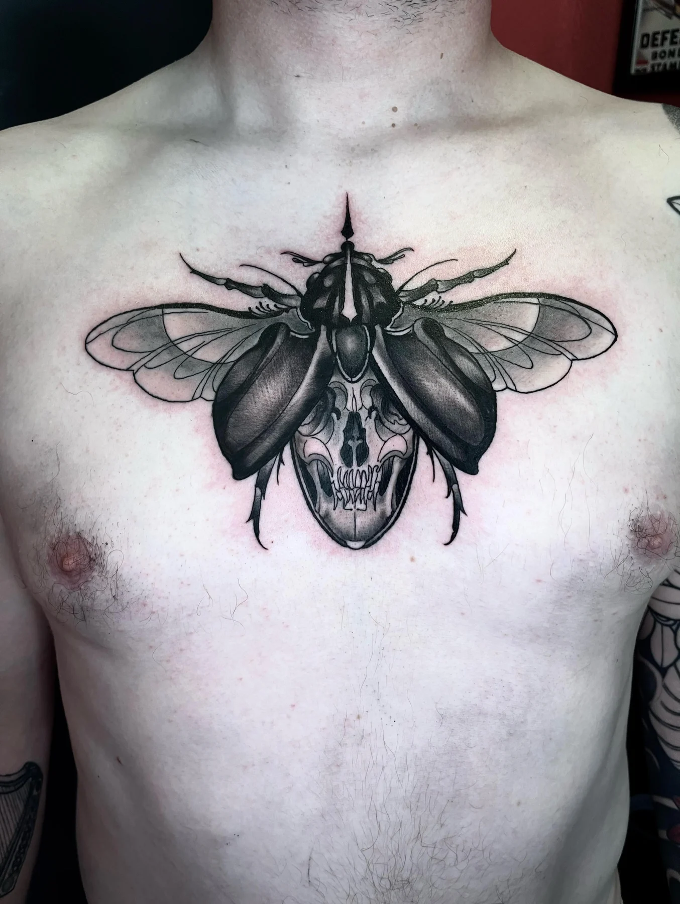
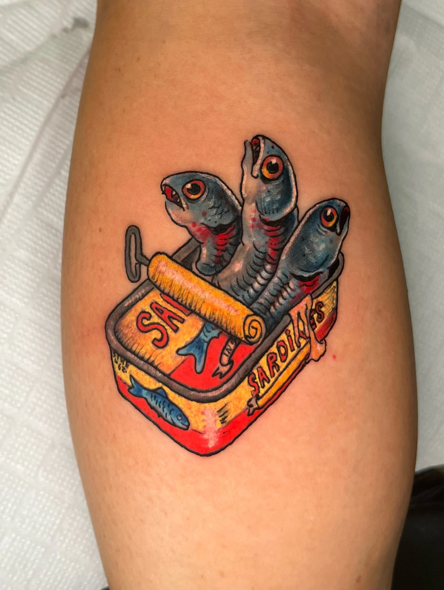

Will Salgado
Tatuagem realista a preto e cinza e a cores, feita com luz, volume e paciência.

Trabalho
Retratos, animais, mangas e peças grandes. Fotos tiradas no estúdio, logo após a sessão.

A mesma regra, com cor
O realismo a cores segue o que vale no preto e cinza: perceber de onde vem a luz, construir o volume e guardar o contraste para o fim. A cor entra por cima dessa base, para a peça continuar a ler-se bem daqui a dez anos.
Lata de sardinhas, flores, animais de estimação, retratos. Se tens uma referência, traz.
Do Brasil para a Praça da Batalha
O Will é tatuador de realismo e trabalha na Vulcan Tattoo, no centro do Porto. Faz desde peças pequenas até mangas inteiras, muitas vezes em projetos de vários meses, e também peças grandes fechadas num só dia.
- EstúdioVulcan Tattoo Porto
- EstilosRealismo preto e cinza, realismo a cores
- ConvençõesHellgarve Tattoo Rock Fest, Faro
Como marcar
Tudo começa por uma mensagem no WhatsApp.
A ideia
Envia a referência, o local do corpo e o tamanho aproximado.
O desenho
Recebes a proposta e o orçamento, e acertamos os detalhes juntos.
A sessão
Marcamos o dia no estúdio. Peças maiores ficam divididas em sessões.
Estúdio
Morada
Vulcan Tattoo
Praça da Batalha, Porto
Horário
Segunda a sábado, 11h–20h
Domingo, 14h–20h